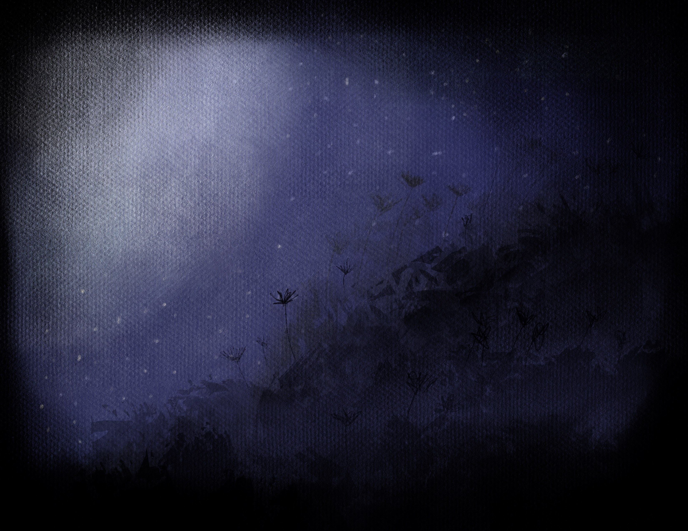

Well, that's a sensitive topic for me, and I hate you for asking, but I love to talk so I will talk about it anyway. I don’t know. And that scares me. I had to start taking antidepressants to feel normal again because the thought took over everything and made getting out of bed feel pointless after asking myself this question since I was five. I like to think I'll be somewhere nice. Maybe it’ll be a long nap. I hope I get to be with the people I love. I guess I should’nt think about all this, but I'm still always…